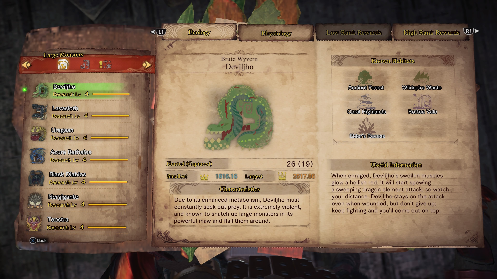
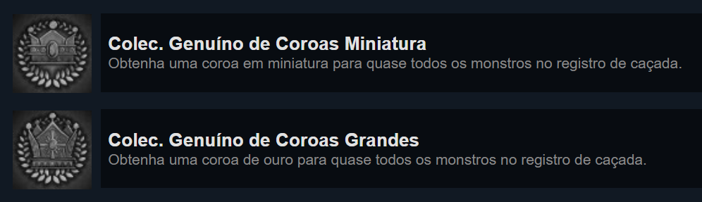

Projeto Coroas Monster Hunter: World
Monster Hunter: World é um jogo de RPG e ação desenvolvido pela Capcom onde seu objetivo é basicamente caçar monstros, como diz o nome. Porém, claro, não é tão simples assim, muito pelo contrário.
O jogo por si só já tem uma dificuldade um tanto quanto elevada, principalmente no seu end-game e é uma dificuldade fixa, não existe fácil, médio, nem difícil, é apenas a que o jogo propõe. Porém o "platinamento" (completar todos achievements) do jogo é a parte complicada, visto que envolve muito RNG (Random Number Generator), ou seja, muita sorte e estou me referindo principalmente ao sistema de coroas.
Sistema de Coroas
Existem 71 monstros que você caça dentro do jogo, sendo que 60 deles possuem o sistema de coroa. Toda vez que você inicia uma missão de caça no Monster Hunter, no caso desses 60 monstros, ele sempre vai spawnar com um tamanho aleatório respeitando certos parâmetros. Existe 6% de chance desse monstro spawnar nos menores limites possíveis, que se você caça-lo com sucesso vai te resultar em uma coroa mini para o monstro respectivo e existe 3% de chance desse monstro spawnar nos maiores limites possíveis, resultando em uma coroa grande para o monstro respectivo.
E o achievement mais complicado de se conseguir é o "Colecionador Genuíno de Coroas Miniatura" que consiste em conseguir a coroa mini para todos os 60 monstros e o "Colecionador Genuíno de Coroas Grandes" que consiste em conseguir a coroa grande para todos os 60 monstros.
Porém eventualmente os developers criaram 8 missões de evento onde as chances de drop dessas coroas são maiores, são 5 monstros que você tem que caçar nas missões, normalmente as missões são sempre 1 e raramente 2, portanto é um tanto chocante, intimidador e demorado essas missões, mas as chances de dropar as coroas são 12% cada uma (mini e grande). E finalmente chegamos no momento que utilizei a programação para conseguir estimar as chances médias de drop de coroa e o total de tentativas necessários em média utilizando milhões de simulações.
Programação
Eu sempre fui meio vidrado em porcentagens, então por algum motivo eu queria saber exatamente qual era a probabilidade de aparecer um monstro com uma coroa, com duas, com três e fui me empolgando. Então fiz um código que recebe um número que representa quantas simulações serão realizadas, então em cada uma dessas simulações são gerados 5 números aleatórios (quantidade total de monstros na missão), que representam os tamanho aleatórios desses monstros, esses números variam de 1 a 25, se algum desses números gerados aleatoriamente forem iguais a "1", "2" ou "3" (equivalente a 12%) é acrescentado +1 ao contador de coroas mini, e se algum desses números forem iguais a "23", "24" ou "25" (equivalente a 12%) é acrescentado +1 ao contador de coroas grandes. Então o código vai fazendo registros de quantas vezes cada simulação teve X números de coroas, quantas delas são mini e quantas são grande.
Dessa forma consegui chegar nesses resultados. Então eu sei que toda vez que iniciar essas missões eu tenho 40% de chance de pelo menos um deles ter uma coroa, porém como o RNG não é muito amigavel comigo eu só me impressiono com o quão difícil é esses 40% acontecerem para mim.
Então tive a ideia de calcular quantas tentativas levariam em média para completar todas as 10 coroas dos 5 monstros que tem nessas missões de evento. O código também recebe um valor que representa o número de simulações que serão realizadas e em cada uma dessas simulações existe um array que armazena a situação atual das coroas para cada um dos 5 monstros, então ela passa por um código extremamente semelhante ao anterior para descobrir se a simulação atual teve alguma coroa para registrar no array, enquanto o array que armazena as coroas não estiver completo o código vai continuar em loop e acrescentar +1 na variavel que representa as tentativas totais, até uma hora completar.
Então com 1 milhão de simulações estima-se que são necessárias 23 tentativas. Considerando que cada missão leva em média 20 minutos para completar, são 7 horas e meia para conseguir todas 10 coroas dos monstros da respectiva missão, e levando em conta que existem 10 missões de eventos desse tipo, levam mais de 76 horas totais para conseguir todas coroas de 50 monstros de 60 necessários para o achievement. Esses outros 10 são são monstros mais fortes, com mais vida e com menos chance de droparem as coroas (3% a mini e 6% a grande). Portanto, chutando baixo são necessárias 100-150 horas para conseguir o tal achievement. Claro, como depende totalmente de RNG pode levar bizarramente mais ou bizarramente menos.
E foi assim que gastei algumas horas brincando no javascript enquanto alimentava uma curiosidade que tinha em um jogo que adoro.